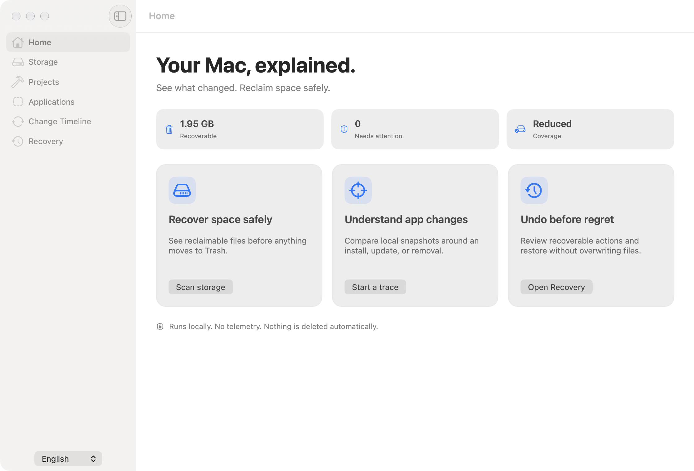
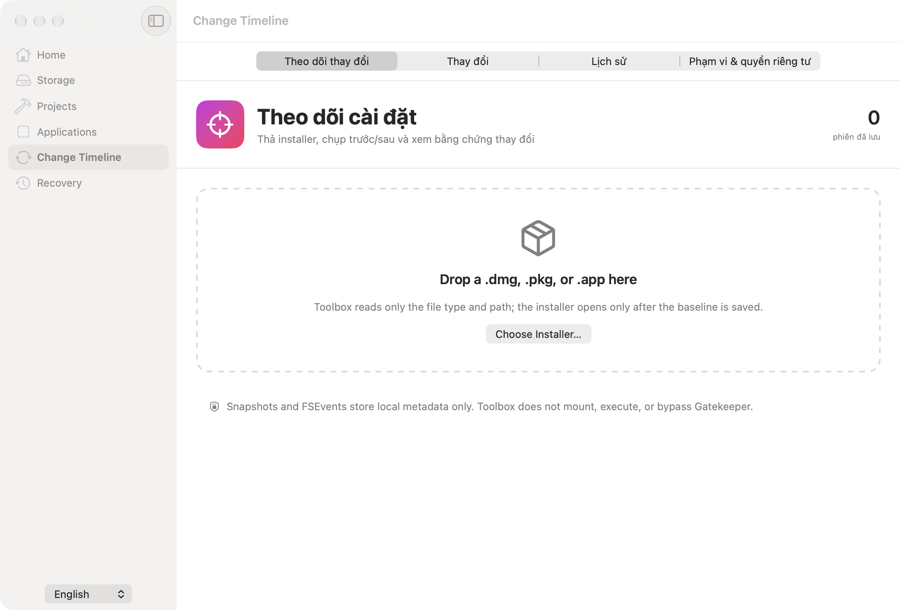
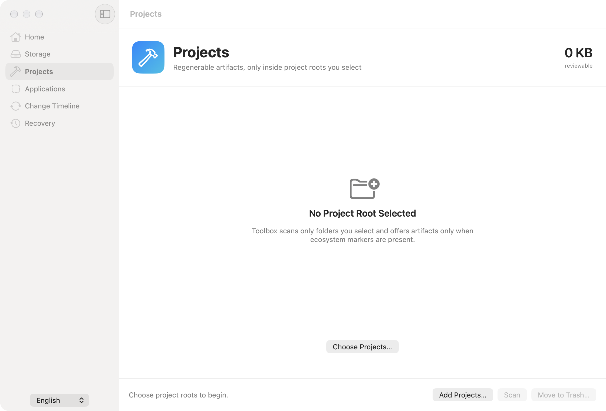

Trace an installation
Capture a before snapshot, run the normal macOS install or uninstall yourself, and compare the after evidence. Toolbox observes changes; it does not execute your installer.
TOOLBOX 2 · LOCAL-FIRST MAC UTILITY
Understand what an installation changed. Find storage you can reclaim. Review each action, with evidence and a path back.
macOS 13+ · Apple Silicon and Intel binaries · MIT open source

START WITH A REAL TASK
Toolbox brings the former Diskora and Changeora workflows together. Inspect first, understand the result, then decide what to do.
Capture a before snapshot, run the normal macOS install or uninstall yourself, and compare the after evidence. Toolbox observes changes; it does not execute your installer.
Inspect folder allocation, hash-verified duplicate candidates, similar-photo candidates and developer storage. Select the targets you actually want to clean.
Eligible reviewed files move to macOS Trash. Recovery retains original and Trash paths and refuses to overwrite an existing destination.
INSIDE THE APP

Observe bounded filesystem events around a user-run workflow. Keep snapshots and evidence locally so you can revisit the result.
Review installed apps and evidence-linked leftovers. Receipts and registration metadata provide context for your decision.
Choose a project root and inspect recognized outputs such as node_modules, .build, .venv, target, Pods and Gradle or Flutter output.
Every mutation requires foreground review and immediate path revalidation. Scheduled runs scan and notify only.

PRIVACY BY DESIGN
Snapshots, hashes, activity and recovery manifests are stored locally. No accounts, telemetry or content uploads. Full Disk Access is optional and expands readable coverage.
The built-in network request checks GitHub for a newer release only when you choose Check for Updates; it sends no scan data or file paths.
Read the privacy policy →CURRENT STABLE RELEASE · v2.0.0
macOS 13 or later. The DMG contains Apple Silicon and Intel slices; a physical Intel launch test is not claimed in the release record.
shasum -a 256 -c Toolbox-2.0.0.dmg.sha256.